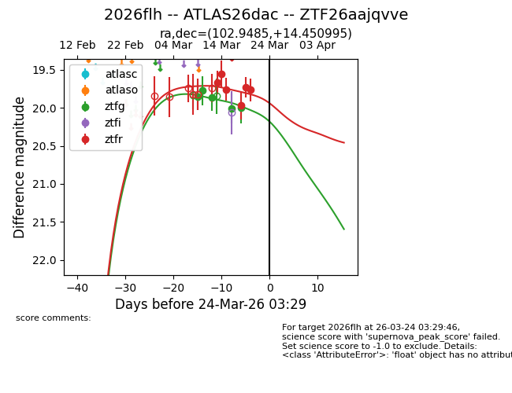
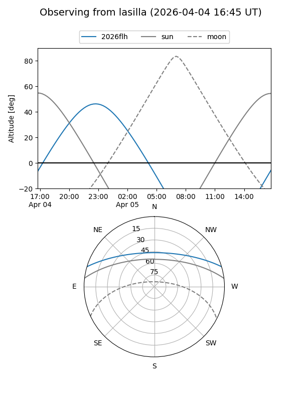
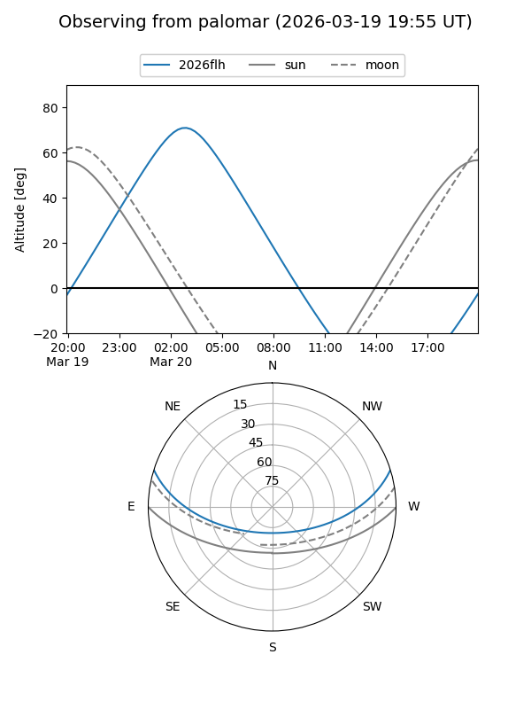
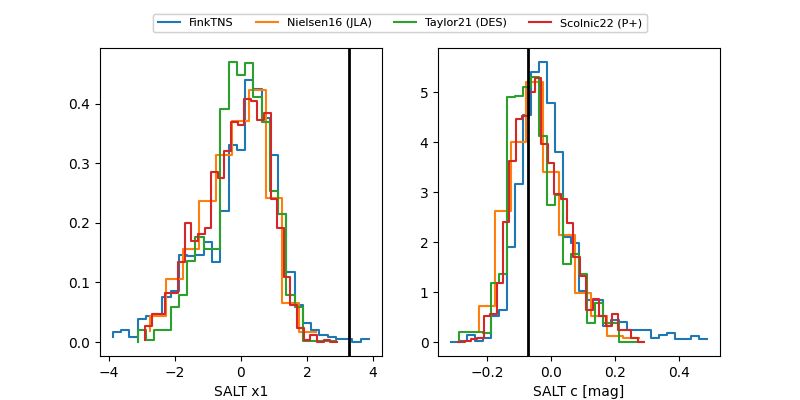

2026flh
Target 2026flh at 2026-03-24 03:32
Aliases and brokers:
FINK: link
Lasair: link
ALeRCE: link
TNS: link
YSE: link
alt names
ZTF26aajqvve (ztf,fink_ztf)
2026flh (tns,yse)
ATLAS26dac (atlas)
Coordinates:
equatorial (ra, dec) = 102.9485,+14.45100
equatorial (HMS+DMS) = 06:51:47.65,+14:27:03.58
galactic (l, b) = (200.0529,+6.61119)
Flags:
Photometry:
last ztfg=20.00, ztfr=19.76
5 ztfg, 6 ztfr detections
Lightcurve

Visibility


Additional plots
